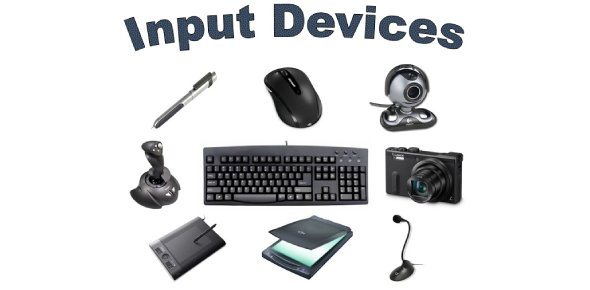
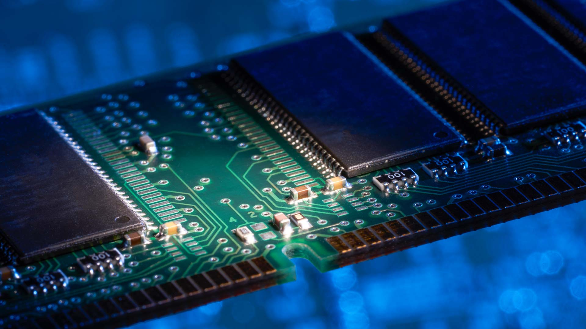

Hardware Terminology
Input Device:

An Input Device is piece of hardware used to provide data to a computer for interaction and control. It turns inputs into zeros and ones for the computer to read. Common Input Devices are keyboard and mouse.[Back to Contents]
Output Device:

An Output device is a piece of computer hardware equipment which converts zeros and ones into a readable form for humans(text, graphics, audio etc). Some examples of Output Devices are, monitors, speakers, and printer.[Back to Contents]
Central Processing Unit(CPU):

The CPU is the primary component of a computer that processes instructions, it does the calculating, sorting and searching. Anything done on the computer, will be processed by the CPU. The CPU contains an ALU, and a control unit.[Back to Contents]
Arithmetic Logic Unit(ALU):

The ALU is a digital circuit used to perform Arithmetic and logic operations(addition, subtraction, multiplication, and division). It's the fundamental building block of the CPU, or GPU.[Back to Contents]
Control Unit:
The Control Unit is the main component of a CPU that directs the operation of the processor. It tells the computer's memory, ALU, Input, and Output Devices how to respond to data.[Back to Contents]
Random Access Memory:

RAM is a high speed storage that the computer, and its applications use to store and access temporary data. Anything that is currently running, like open files, are all stored in RAM.[Back to Contents]
Optical Memory:
Optical Memory is any type of storage in which the data is written and read with a laser. Optical Memory are commonly found in compact discs, like CDs and DVDs.[Back to Contents]
Magnetic Memory:
Magnetic Memory is the main way data is being stored on magnetic medium. This type of memory has a longer life span, and a larger capacity than Optical Memory. Which is why it's used in hard drives.[Back to Contents]
Flash Memory:
Flash Memory is a long life and non-volatile storage chip that is widley used in embedded systems. It can keep stored data even when there's no power. Which is why it is commonly used in portable devices.[Back to Contents]
Logic Gates:

Logic Gates is an electronic circuit with one or more input, but only one output. It is the basic building block of any digital system, it performs basic logical funtions. Logic Gates are used in microcontrollers, microprocessors, and electronics.[Back to Contents]